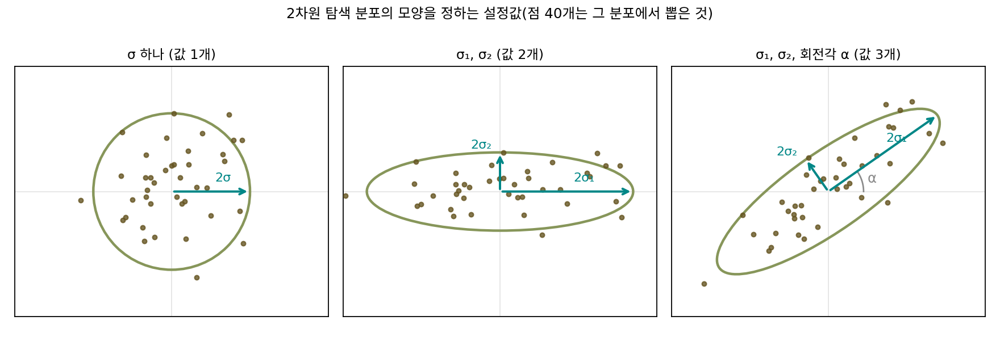
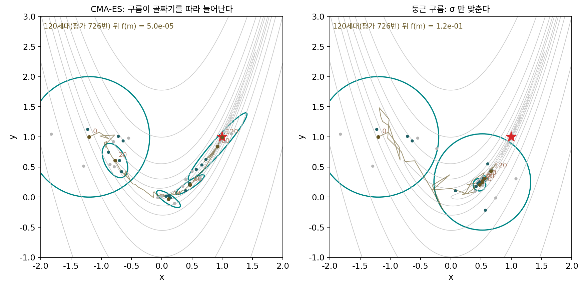
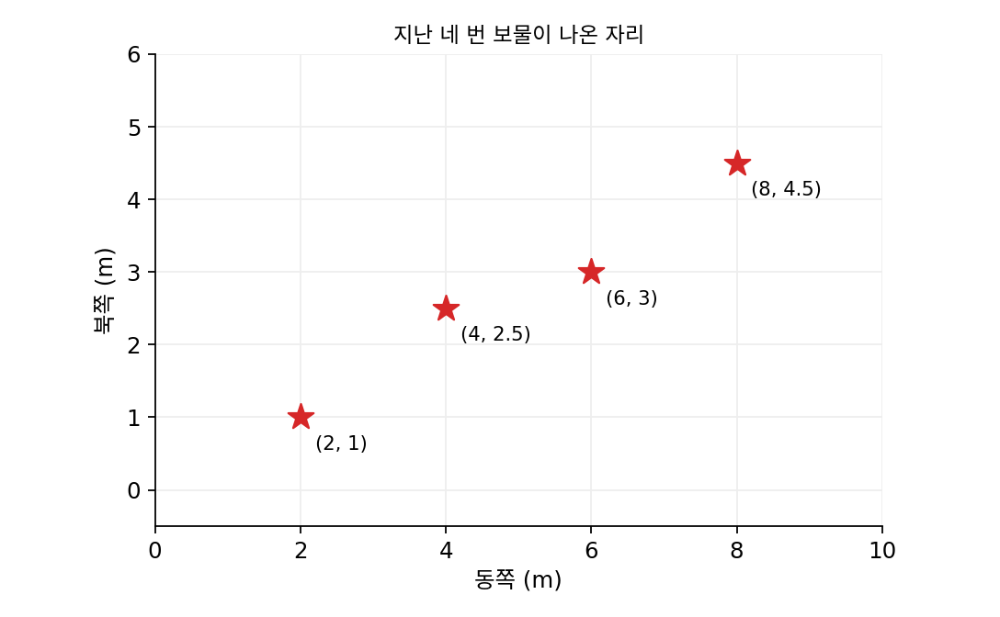
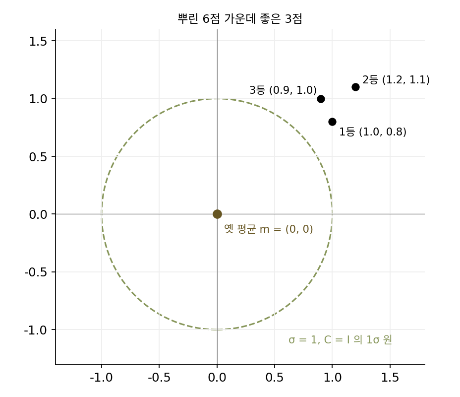
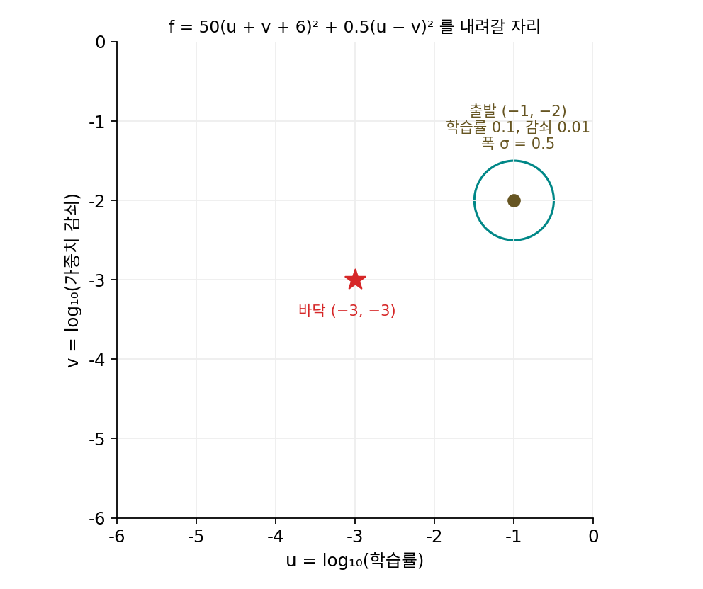
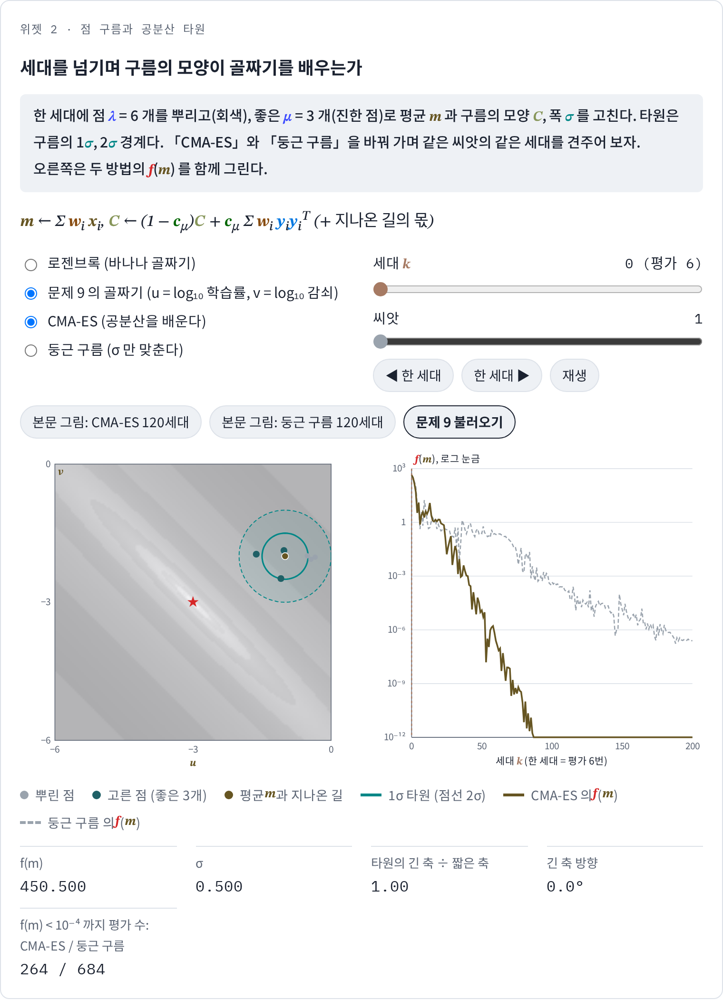

CMA-ES: 점 구름의 모양을 골짜기에 맞추기
1/5 규칙은 둥근 그릇에서 스텝 크기를 훌륭하게 맞췄지만, 그 규칙이 뿌리는 스텝은 언제나 둥근 모양이었다. 좌표마다 같은 σ로 노이즈를 더했으니, 자식들은 부모를 가운데 둔 원 모양으로 퍼진다. 경사하강을 다룰 때 본 조건수, 곧 가장 크게 휜 방향의 곡률을 가장 작게 휜 방향의 곡률로 나눈 값이 크면 골짜기가 길쭉해지고 고정된 학습률의 스텝 수가 조건수에 비례해 늘었다. 무작위로 뿌리는 방법도 같은 벽에 부딪힐 것이다. 좁은 골짜기에서는 원의 반지름을 골짜기의 폭에 맞춰 줄여야 성공이 나오는데, 그 작은 원으로 길쭉한 골짜기의 바닥을 따라가려면 한참 걸린다. 골짜기가 휘어 있기까지 하면 어느 방향이 길쭉한지도 자리마다 바뀌니, 원 대신 골짜기를 따라 늘어난 타원으로 뿌리고 그 타원의 방향과 길이를 탐색 도중에 배울 수는 없을까?
역사: 회전하는 타원을 배우기까지
생각 자체는 오래되었다. 슈베펠은 1975년에 이미 좌표마다 다른 표준편차뿐 아니라 좌표 사이의 공분산까지 탐색이 스스로 맞추게 하자는 안을 내고 따져 보았다. 정규분포의 같은 확률 면이 아무 방향으로나 돌아간 타원이 되게 하자는 이 안은 1980~1981년에야 출판되었고, 그 뒤로도 오래 주목받지 못했다. 바이어와 슈베펠(2002)은 1970년대의 모자란 계산 능력, 탄탄한 이론의 부재, 그리고 아주 작은 개체군으로 일하는 습관 때문에 이 안이 묻혀 있었다고 보았다. 당시의 방식은 표준편차와 회전각 같은 설정값을 답과 함께 들고 다니며 무작위로 바꾸고, 좋은 자식이 좋은 설정을 함께 물려주기를 기다렸다. 차원이 d면 맞출 값이 d(d + 1)/2개나 되는데, 작은 개체군에서 그 많은 값을 운에 맡겨 맞추기는 어려웠다.

이 흐름을 바꾼 사람들이 니콜라우스 한센(Nikolaus Hansen)과 안드레아스 오스터마이어(Andreas Ostermeier)다. 오스터마이어와 동료들은 1994년에 여러 세대 동안 평균이 실제로 걸어온 길을 더해 두고, 그 길이가 무작위로 걸었을 때보다 길면 스텝을 키우고 짧으면 줄이는 방법을 냈다. 한센과 오스터마이어는 1996년 학회 논문 「진화 전략에서 아무 정규 돌연변이 분포나 맞추기: 공분산 행렬 적응」에서 같은 생각을 공분산 전체로 넓혔다. 표준편차를 무작위로 바꿔 보고 선택이 골라 주기를 기다리는 대신, 이번 세대에 성공한 스텝들 자체에서 다음 분포의 모양을 계산하는 것이다. 2001년 『진화 계산(Evolutionary Computation)』에 실린 논문의 제목 「진화 전략에서 무작위를 완전히 걷어 낸 자기 적응」이 그 뜻이다. 그들은 좌표가 잘 맞춰진 함수에서는 예전 방법과 비슷하고, 좌표끼리 얽히고 축척이 나쁜 함수에서는 흔히 몇 자릿수 빨라진다고 적었다. 한센은 이 연구로 1998년 레헨베르크가 있던 베를린 공과대학에서 박사 학위를 받았다.

구름의 모양을 맞추는 거면 좋은 점들로 공분산 행렬을 계산하면 되잖아요. 코드 몇 줄이면 될 것 같은데요.

슈베펠의 1975년 안은 그렇게 계산하지 않았어요. 표준편차와 회전각을 답과 함께 들고 다니며 무작위로 바꿨지요. 맞출 값이 d(d + 1)/2개라고 했는데, 차원이 커지면 몇 개가 되죠?

2차원이면 3개, 10차원이면 55개, 100차원이면 5050개예요.

그 5050개를, 아주 작은 개체군에서 좋은 자식이 좋은 설정을 우연히 물려주기를 기다려 맞춘다면요?

자식 몇 개의 점수 하나하나로 숫자 5050개가 잘 맞았는지를 가려야 하니까… 거의 안 맞겠네요.

그래도 성공한 스텝들로 바로 계산할 생각은 왜 그렇게 늦게 나왔을까요? 지금 보면 당연해 보이는데요.

바이어와 슈베펠은 모자란 계산 능력, 탄탄한 이론이 없었던 것, 아주 작은 개체군으로 일하던 습관을 꼽았어요. 성공한 스텝 여러 개로 모양을 계산하려면 한 세대에 점을 여럿 뿌려야 하는데, 점 한두 개로 일하던 습관과는 맞지 않았지요.

그럼 한 세대에 점을 여섯 개쯤 뿌리고 좋은 셋의 스텝만 모아도, 구름이 휜 골짜기를 따라 늘어날 만큼 모양을 배울 수 있을까요?
바나나 골짜기에서 점 여섯 개 뿌리기
길쭉하고 휘기까지 한 골짜기를 시험하려면 그런 골짜기를 일부러 만든 함수가 필요하다. 영국의 하워드 로젠브록(Howard Rosenbrock)이 1960년 『컴퓨터 저널(The Computer Journal)』에 낸 논문에서 쓴 시험 함수가 그런 함수다. 지금 흔히 쓰는 꼴은 f(x, y) = (1 − x)² + 100(y − x²)²이다. 둘째 항 때문에 바닥은 포물선 y = x²를 따라 휘어진 좁은 골짜기가 되고, 첫째 항이 그 골짜기를 따라 (1, 1) 쪽으로 아주 완만하게 기운다. 등고선이 바나나 모양이라 바나나 함수라고도 부른다. 바닥 (1, 1)에서 곡률을 재면 가장 가파른 방향과 가장 완만한 방향의 곡률 비, 곧 조건수가 2508이다. 이 함수를 고른 것은 바닥이 어디인지 알고, 2차원이라 점 구름을 눈으로 볼 수 있기 때문이기도 하다.
이번에는 점을 하나가 아니라 한 세대에 여섯 개씩 뿌린다. 평균 m = (−1.2, 1)에서 폭 σ = 0.5로 시작해, 뿌린 여섯 개 가운데 좋은 셋으로 다음 세대의 평균과 모양을 정한다. 비교할 상대는 같은 알고리즘에서 모양을 배우는 부분만 끄고 폭 σ만 맞추게 한 「둥근 구름」이다(σ는 여러 세대 동안 걸어온 길의 길이로 맞춘다). 씨앗 1로 세대마다 보면 다음과 같다.
| 세대 k | 평가 수 | 모양을 배우는 쪽 f(m) | 구름의 긴 축 ÷ 짧은 축 | 긴 축 방향 | 둥근 구름 f(m) |
|---|---|---|---|---|---|
| 0 | 6 | 24.2 | 1.00 | 원이라 방향 없음 | 24.2 |
| 20 | 126 | 3.153 | 1.75 | 117.5° | 0.2697 |
| 40 | 246 | 0.9914 | 3.08 | 146.6° | 0.3100 |
| 80 | 486 | 0.02177 | 6.95 | 49.1° | 0.1951 |
| 120 | 726 | 0.00004965 | 18.70 | 62.4° | 0.1171 |
| 140 | 846 | 0.00000001067 | 40.24 | 63.3° | 0.09631 |
처음 20세대는 둥근 구름이 오히려 앞선다. 모양을 배우는 CMA-ES는 골짜기의 굽은 부분을 도느라 구름의 방향이 117.5°, 146.6°, 49.1°로 계속 돈다. 그런데 골짜기의 곧은 끝자락에 들어선 80세대부터 차이가 벌어진다. 둥근 구름은 0.1~0.3 언저리에서 기어가고, CMA-ES는 140세대에 1.07 × 10⁻⁸까지 내려간다. 씨앗 열 개의 중앙값으로 보면 f(m)이 10⁻⁴ 아래로 내려가기까지 CMA-ES는 636번, 둥근 구름은 9045번을 잰다. 10⁻¹⁰까지는 858번 대 28,746번이다.
모양을 배우는 구름이 끝자락에서 왜 이렇게 빨리 내려가는지는 표의 마지막 두 칸에서 보인다. 바닥 (1, 1)에서 곡률이 가장 작은 방향, 곧 골짜기가 뻗은 방향은 63.5°이고, 곡률 비의 제곱근은 √2508 = 50.08이다. 140세대의 구름은 긴 축이 63.3° 방향이고 긴 축이 짧은 축의 40.24배다. 아무도 곡률을 알려 주지 않았는데, 구름이 바닥 근처의 골짜기 모양을 거의 그대로 베껴 놓았다. 좋은 점들이 골짜기를 따라 놓이니, 그 점들로 모양을 고치면 구름이 골짜기를 따라 늘어나는 것이다.
이렇게 뿌리는 정규분포의 평균뿐 아니라 공분산 행렬, 곧 구름의 방향과 축마다의 길이까지 좋은 점들에서 배워 가는 진화 전략을 CMA-ES (모양을 배우는 진화 전략 / covariance matrix adaptation evolution strategy)라 한다. 공분산 행렬 적응 진화 전략의 머리글자로, 「시엠에이 이에스」라고 읽는다. 한 세대의 핵심 계산은 점을 뿌리는 줄과, 좋은 점들로 평균과 공분산 행렬을 고치는 줄, 이렇게 두 줄이다.
λ(람다)와 μ(뮤)는 개수다. 2차원의 기본 설정은 λ = 6, μ = 3, 가중치 w = (0.637, 0.2846, 0.0784), cμ = 0.0579다. 새 평균은 좋은 점들의 가중 평균이고, 공분산은 좋은 점들의 스텝 y로 만든 행렬 쪽으로 조금씩 끌려간다. 실제 CMA-ES에는 두 가지가 더 있다. 여러 세대 동안 평균이 걸어온 길을 더해 두었다가 그 방향으로 공분산을 늘리는 항과, 같은 길의 길이로 σ를 맞추는 규칙이다. 위젯과 이 장의 숫자는 모두 이 둘까지 넣은 한센의 기본 설정으로 계산했다.

ML에서: 여러 GPU로 하이퍼파라미터 고르기
신경망의 하이퍼파라미터를 고르는 일은 이 절의 함수와 닮았다. 학습률, 가중치 감쇠, 층의 폭 같은 값을 하나 정해 학습시켜 검증 손실을 재는 데 GPU 몇 시간이 걸리고, 그 값들끼리 서로 얽혀 있다. 프라이부르크 대학교의 일리야 로시칠로프(Ilya Loshchilov)와 프랑크 후터(Frank Hutter)는 2016년 ICLR 워크숍 논문 「심층 신경망의 하이퍼파라미터 최적화를 위한 CMA-ES」에서, 흔히 쓰는 베이즈 최적화는 앞의 결과를 다 보고서야 다음 후보를 정하기 때문에 본디 차례로 하나씩 도는 방법이라고 짚었다. CMA-ES는 한 세대의 점 λ개를 한꺼번에 재도 되므로, 그들은 λ = 30으로 잡아 GPU 30대에서 MNIST 합성곱 신경망의 하이퍼파라미터 19개를 함께 골랐다. 그들은 베이즈 최적화가 평가 횟수가 아주 적을 때(하이퍼파라미터 수의 10배 아래) 강하고, CMA-ES는 평가를 더 많이 쓸 수 있을 때 강한 편이라고 적었다.
문제 7. 보물이 나온 자리 네 곳
운동장 보물찾기에서 지난 네 번 보물이 나온 자리가 (2, 1), (4, 2.5), (6, 3), (8, 4.5)이고(m 단위), 다음번에는 이 네 곳을 보고 찾을 범위를 정하려 한다. (가) 네 곳의 평균과 공분산 행렬(넷으로 나눔)을 구하라. 가장 많이 퍼진 방향과 그 방향의 표준편차, 가장 적게 퍼진 방향의 표준편차는? (나) 평균을 중심으로 네 곳을 모두 담는 원과, 공분산으로 그린 2σ 타원의 넓이를 비교하라.

평균은 (5, 2.75)예요. 찾을 범위는 원으로 하면 되죠. 평균에서 네 곳까지 거리가 3.4731, 1.0308, 1.0308, 3.4731이니까 평균 거리 2.25 m 원이면 될 것 같아요. 넓이는 15.932 m²예요.
그 원 안에 지난 네 곳이 몇 개나 들어가죠?
가운데 두 곳만요. 양 끝 두 곳은 3.47 m라서 밖이에요. 넷 다 담으려면 반지름 3.4731 m, 넓이 37.895 m²로 키워야 하네요.
원 말고 퍼진 모양부터 보자. 공분산은 [[5, 2.75], [2.75, 1.5625]]야.
그걸로 어느 방향으로 퍼졌는지는 어떻게 알아?
고윳값과 고유벡터를 보면 돼. 고윳값이 6.5242와 0.0383이라서 가장 많이 퍼진 방향(29.0°)의 표준편차는 2.5542 m, 그에 수직인 방향은 0.1958 m야. 긴 축이 짧은 축의 13.05배야. 네 곳이 거의 한 줄로 놓여 있어서 그래.
그 공분산으로 2σ 타원을 그리면 넓이는 얼마이고, 네 곳은 그 안에 드나요?
넓이는 π × 2√6.5242 × 2√0.0383 = 6.283 m²예요.
원보다 훨씬 작은데 양 끝 두 곳이 그 안에 들어가?
평균에서 그냥 잰 거리로는 판단이 안 되겠다. 짧은 축 쪽 1 m와 긴 축 쪽 1 m는 무게가 다르니까, 공분산으로 잰 거리(마할라노비스 거리)로 봐야 해. 구해 보니 네 곳 모두 1.4142라서 2σ 안에 들어.
원과 견주면요?

네 곳을 다 담는 원의 6분의 1 넓이로 네 곳을 다 담아요. 퍼진 정도를 숫자 하나(반지름)로 줄이지 않고 방향마다 따로 재니까 이렇게 되는 거네요. 선형대수에서 대칭 행렬을 고유벡터 축으로 돌려 놓으면 축마다 따로 볼 수 있다고 배운 게 이거예요.

친구가 매일 같은 산책로에서만 열쇠를 잃어버린다면, 동네 전체를 원으로 뒤질 게 아니라 그 산책로를 따라 길쭉하게 뒤져야 하잖아요. 산책로가 골짜기, 길쭉하게 뒤지기가 공분산 C를 배우는 거예요.
문제 8. 옛 평균에서 잴까, 새 평균에서 잴까
2차원 CMA-ES의 한 세대. 옛 평균 m = (0, 0), σ = 1, C = I(단위행렬)에서 뿌린 6점 가운데 좋은 3점이 좋은 순서로 (1.0, 0.8), (1.2, 1.1), (0.9, 1.0)이었다. 가중치는 (0.637, 0.2846, 0.0784), cμ = 0.0579이다. (가) 새 평균은? (나) 옛 평균에서 잰 스텝으로 Σ w y yᵀ를 만들고, 그 고윳값과 긴 축 방향을 구하라. 새 평균에서 잰 스텝으로 같은 행렬을 만들면? (다) 둘 가운데 어느 것을 넣느냐에 따라 새 C는 어떻게 달라지는가?

새 평균은 (1.0491, 0.9010)이에요. 분포의 모양을 새로 정하는 거니까, 통계 시간에 배운 대로 새 평균을 빼고 공분산을 구하는 게 맞겠죠. [[0.0098, 0.0105], [0.0105, 0.0185]]예요.
그 행렬을 넣어서 새 C를 만들어 볼까요? 이번 세대에 평균이 어디로 얼마나 움직였는지가 그 안에 남아 있나요?
(1 − 0.0579)I에 더하면 [[0.9427, 0.0006], [0.0006, 0.9432]]이고, 고윳값이 0.9436, 0.9423이에요. 거의 둥글고 조금 작아졌어요.
근데 평균은 (0, 0)에서 (1, 0.9)쯤으로 꽤 움직였잖아.
그러네. 그렇게 크게 움직였다는 건 하나도 안 남았어. 새 평균을 빼는 순간 그 움직임이 빠져 버려.
옛 평균에서 재면 Σ w y yᵀ가 [[1.1103, 0.9558], [0.9558, 0.8304]]예요. 고윳값이 1.9364와 0.0044라서 축 비가 21.06이고, 긴 축이 40.8° 방향이에요. 세 점이 다 오른쪽 위로 몰려 있으니까 오른쪽 위로 길쭉해요.
그 행렬을 넣은 새 C도 계산해 보세요. 그리고 좋은 점들이 같은 방향으로 몰리는 세대가 여러 번 이어지면요?

새 C는 [[1.0064, 0.0553], [0.0553, 0.9902]], 축 비 1.0576이에요. 한 세대로는 조금이지만 같은 스텝이 다섯 세대 이어지면 1.2922, 스무 세대면 2.3211이에요. 성공한 스텝이 계속 같은 방향이면 구름이 그 방향으로 점점 늘어나요.

그러니까 CMA-ES가 재는 건 좋은 점들끼리 얼마나 흩어졌느냐가 아니라, 좋은 점들이 옛 평균에서 어느 쪽으로 얼마나 떨어져 있었느냐네요. 성공한 스텝의 방향을 모으는 거예요. 같은 자료라도 어느 점을 기준으로 이차 모멘트를 재느냐에 따라 분산이 되기도 하고 평균 제곱 이동이 되기도 한다는 걸 확률 수업에서 배웠는데, 여기서는 분산과 평균 제곱 이동의 차이가 알고리즘의 핵심이었어요.
문제 9. 학습률과 가중치 감쇠의 골짜기
AdamW 같은 옵티마이저에서 가중치는 한 스텝마다 (학습률 × 가중치 감쇠)의 비율만큼 줄어든다(PyTorch 의 AdamW 구현 기준). 그래서 검증 손실은 두 값의 곱에 민감하고, 곱을 지키며 둘을 함께 옮기는 쪽에는 덜 민감하다고 하자. u = log₁₀(학습률), v = log₁₀(가중치 감쇠)로 두고 검증 손실을 f = 50(u + v + 6)² + 0.5(u − v)²로 흉내 낸다(설명을 위해 지은 함수, 바닥 (−3, −3)). (가) 이 골짜기의 조건수는? (나) 출발 (−1, −2)(학습률 0.1, 감쇠 0.01), σ = 0.5에서 CMA-ES와 둥근 구름은 f(m) < 10⁻⁶까지 몇 번 재는가(씨앗 1~10의 중앙값)? (다) 다 내려간 뒤 CMA-ES 구름의 긴 축은 어느 방향인가? (풀어 본 뒤 위젯 2의 「문제 9 불러오기」로 확인해 보자.)

이런 건 하나씩 고르면 돼요. 감쇠를 고정하고 학습률을 제일 좋은 데로 맞춘 다음, 학습률을 고정하고 감쇠를 맞추면 끝나잖아요.
출발점 (−1, −2)에서 v = −2로 고정하고 u만 움직이면 가장 좋은 u는 어디죠? 거기가 바닥인가요?

u + v + 6이 0이 되는 방향의 항이 세게 당기니까 u ≈ −4쯤이요. 그런데 바닥은 (−3, −3)이라 아직 멀어요. 다시 u를 고정하고 v를 맞추면 또 조금 가고… 대각선 골짜기에서 축을 따라 한 번에 하나씩 움직이니까 계단처럼 지그재그로 가겠네요.
골짜기 모양부터 볼게. 헤시안이 [[101, 99], [99, 101]]이라 고윳값이 200(u + v 방향)과 2(u − v 방향)야.
그럼 조건수가 100이네. 돌려 볼게. f(m) < 10⁻⁶까지 CMA-ES는 279번, 둥근 구름은 891번이야.
씨앗 1의 CMA-ES가 다 내려갔을 때 구름의 모양은요?
53세대에서 긴 축이 짧은 축의 8.71배이고 방향이 135.1°예요.
135°면 u와 v가 각각 어떻게 움직이는 방향이죠?
(1, −1) 방향이니까… u가 늘 때 v가 같은 만큼 줄어요. 학습률을 올리면서 감쇠를 같은 비율로 내리는 방향이에요. √100 = 10에 가까운 축 비로 골짜기를 따라 늘어났어요. 평균은 (−3.0001, −2.9999)이고요.
남의 코드에서 학습률만 두 배로 바꾸면 감쇠도 같이 반으로 바꿔야 비슷한 결과가 나오는 이유가 그 대각선이었네요. 수강 신청에서 과목을 하나씩 바꾸면 시간표가 계속 꼬이는데, 붙어 다니는 두 과목은 같이 옮겨야 한 번에 풀리는 거랑 같아요.
위젯 2에서 문제 9 설정을 불러와 세대를 넘기면서, 다 내려간 뒤 구름의 긴 축이 어느 쪽으로 눕는지 확인해 보세요.
